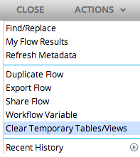
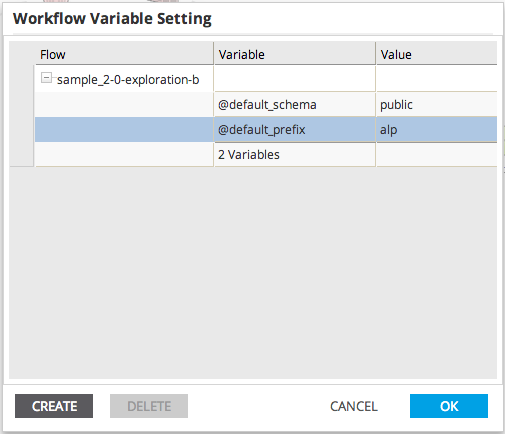

Workflow Variables
Users are able to define variables for a workflow, which can then be used within SQL and Pig statements and other parameters defined for the operators of the workflow.
The value of the workflow variable will be substituted appropriately at runtime giving more flexibility at design time.
Each workflow variable begins with the '@' symbol. and each flow contains 2 variables by default: @default_schema (used as the default schema for database output)
and @default_prefix (used as the default prefix for output tables and output files).
The default variables cannot be deleted, but their values can be changed.
- To define Workflow Variables, open a workflow and click Workflow Variables in the Actions drop-down.

- The dialog displays the currently configured variables for the open workflow.
- Double-click a variable to update its value.
- Click create to specify a new workflow variable.
- Select a variable with a single click and click Delete to remove that variable.
- For flows containing a sub-flow, the variables of the sub-flow will also appear in this dialog.
- The user can only change the value of sub-flow variables.
- If a variable in the sub-flow has the same name as a variable in the parent flow, the user will be warned that the value will be overridden.
- Click OK to save the workflow variables, or click Cancel to discard changes.
